Teach a University Course¶
A lecture from my class, Engineering 3: Introduction to Programming, Aug 2015
Executive Summary¶
In Summer 2015 I co-instructed Engineering 3: Introduction to Programming, as a Teaching Associate. My co-instructor, UCSB Mechanical Engineering Professor Jeff Moehlis, had taught ENGR 3 several times and felt that the course could use a fresh set of eyes. The course material split naturally into two themes, and so Jeff and I split the course into two parts: I taught the programming aspects during the first three weeks of the six-week quarter, and Jeff taught mathematical applications for the last half. For my half, I designed the lectures, homeworks, quizzes, and the midterm exam. I participated in the second half of the class too, attending the lectures, holding office hours, and helping write and grade the final exam. Wanting to maximize the students’ opportunity to practice programming, I instituted weekly “Hack Days”, where lecture was conducted in a large computer lab. My co-instructor attended my lectures and provided guidance and feedback during our weekly meetings. We used feedback cards to assess the students’ well-being and adjust the course as needed. The course went well: the students did well in the course and their feedback cards indicated that they felt they learned a lot about programming and enjoyed my enthusiasm.
Course Background¶
ENGR 3 is an introductory programming course for Freshmen engineers. Using the Matlab programming environment, students learn the basic datatypes and control structures that underlie any program. The course naturally divides into two parts: first, the students become proficient in basic programming constructs and patterns; second, the students learn mathematical concepts common in engineering — matrices, probability, and ordinary differential equations — and write programs involving these concepts. Consequently, it seemed natural to divide the course in half, with me teaching the Matlab-heavy first three weeks, and my co-instructor Professor Jeff Moehlis teaching the last three weeks.
Student backgrounds¶
Recall from my experience TAing ENGR 3 that the main challenge of teaching ENGR 3 over the summer is the wide range of student abilities. Based on the lessons learned from TAing ENGR 3 the year before, we gave the students an informal entrance survey on the first day of class. This was proposed by Instructional Developer Lisa Berry: by collecting some data on students’ programming backgrounds, we aimed to tailor our teaching efforts to suit the students’ prior experience. Here are two relevant plots from that survey:
| 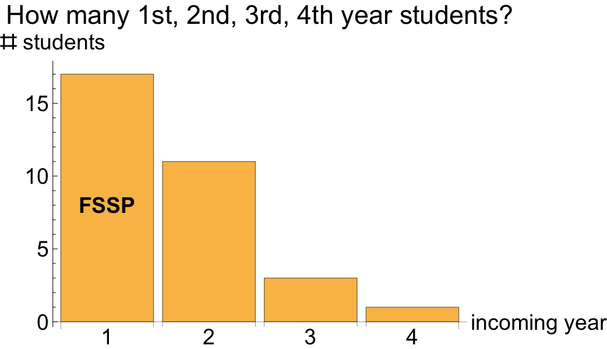 | 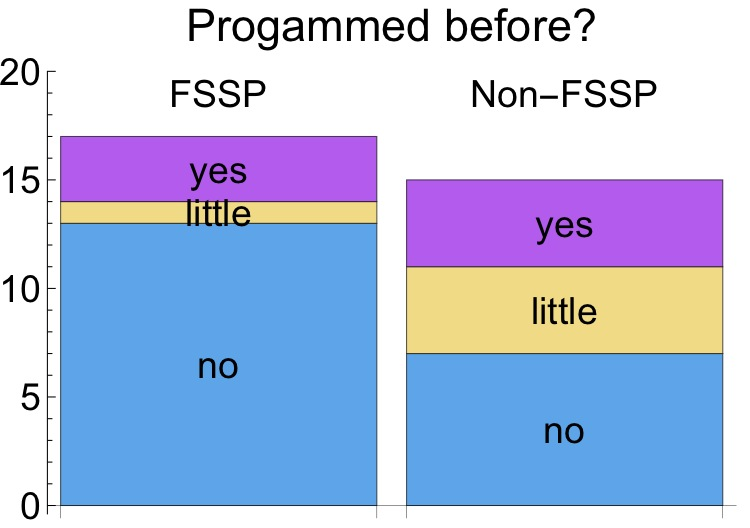 |
Entrance survey data.
Roughly half our 32 ENGR 3 students were in the Freshman Summer Start Program (FSSP), a bigger fraction than in 2014. Not surprisingly, most students had not programmed before. The 3 FSSP students with prior programming experience (purple box on left) had most likely taken programming classes in high-school.
The survey confirmed that we had a diverse student population and special care would need to be taken to keep students engaged while also not overwhelming them. Thematically speaking, the survey highlighted the importance of an empathetic instructor.
Course Design (Syllabus analysis)¶
Now we discuss the design of the course. Since this was my first time teaching a course, we kept it similar to what my co-instructor had done in previous years: lecture, TA discussion sections, weekly homework, office hours, weekly GauchoSpace quizzes, and GauchoSpace discussion forums. For specifics, please see the annotated syllabus in Appendix 1.
The following subsections examine noteworthy aspects of the course, and how they helped me grow as an instructor.
Cyber-Prof¶
My ENGR 3 lectures consisted mainly of demonstrating aspects of the Matlab programming language, punctuated by in-class exercises for the students to practice the language. However, it’s boring when an instructor spends the whole lecture typing from behind the podium. I wanted a way to type on the computer and walk around the classroom, gesticulating and pointing. So I purchased a two-piece wireless keyboard and wireless trackpad. Using some spare screws, plastic, and an old wrist-guard, I was able to affix the keyboard, trackpad, and iClicker to my body:
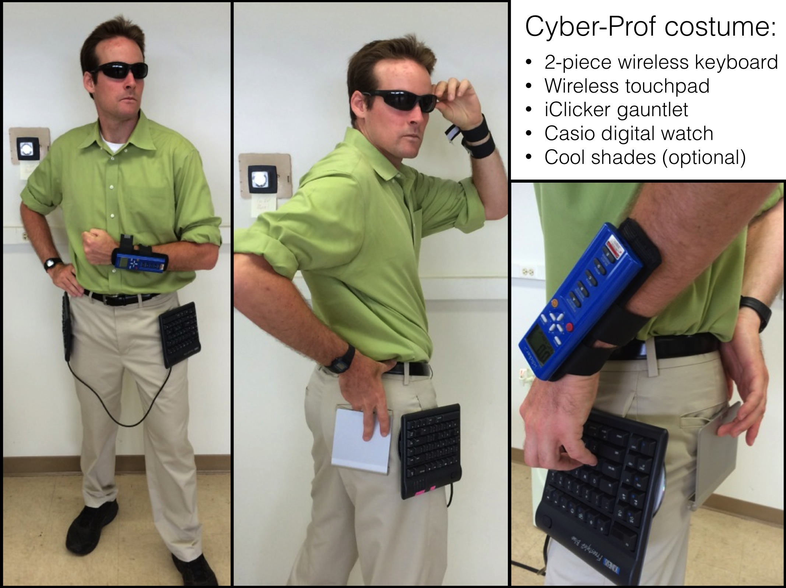{kind=link}
The first day of class, after a motivational slideshow about the value of programming, I asked the students if they were ready to “Enter the Matrix… Laboratory” (a reference to the movie The Matrix; also, “Matlab” is short for “Matrix Laboratory”), and I put on the Cyber-Prof suit. The students were smiling and engaged.
Unfortunately, the Cyber-Prof suit didn’t end up working out — my dress pants have weirdly-angled pockets so the keyboard kept falling out. Additionally, it was too hard to type with the keyboards shifting around. Consequently, I settled for typing on my laptop beside the podium, and jumping back and forth to the projector screen. Even though it didn’t work out, I’m glad I tried the Cyber-Prof outfit: the students thought it was very cool while it lasted, and it got them excited.
Hack Day¶
In “The Road To Excellence” (2014), K. Ericsson reports three criteria for effective learning:
- A well-defined task with an appropriate difficulty level for the particular individual
- Informative feedback
- Opportunities for repetition and corrections of errors
Traditional “broadcast-style” lectures don’t accommodate these criteria. Although I peppered my lectures with in-class exercises for the students, I wished every student could be practicing Matlab in real-time during the lecture. That would provide them informative feedback (#2) in the form of correct answers or error messages, and permit them to correct their errors (#3), with an instructor present to help them.
So, in keeping with the theme of “Students learn best when they struggle in a controlled environment,” I dedicated the last lecture each week to “Hack Day”: We met in a large 50-seat computer lab, and instead of a broadcast-style lecture, I would pose real-world engineering problems for the students to solve. The students would take 10 minutes to think about the problem, and my co-instructor Jeff and I would pace around the room helping students. Then we would reconvene and discuss students’ solutions, and repeat the process.
I intended Hack Day to illustrate fun, hard, real-world engineering problems. I thought that would motivate the students to see what programming is good for. But most of the students wished that Hack Day would help them with their homework more directly. In hindsight, I should have known that would be the case, given the students’ incentives: there was no grade associated with Hack Day. Perhaps I should have dedicated a portion of their grade to solving Hack Day problems in groups, as Professor Roger Freedman does with his undergraduate Physics courses. This speaks to the theme that “An instructor needs to empathize with the students’ struggle” — their struggle to focus their energy on what matters (their grade).
Changing the grade weights to include Hack Day problems was out of the question — the syllabus is a contract between the instructor and the students. Instead, I re-designed Hack Days 2, 3, and 4 to have the student work in-class exercises that were more directly related to concepts necessary for their homework. The students indicated on subsequent feedback cards that they approved of the change, and felt the Hack Days were valuable.
Homework¶
In my preparation for the course, I wrote several dozen homework problems meant to illustrate fun, technical programming applications. Each problem exercised certain concepts, and in order to help me pick good homework problems based on what I had covered in lecture, I wrote a program to diagram which problems required which concepts:
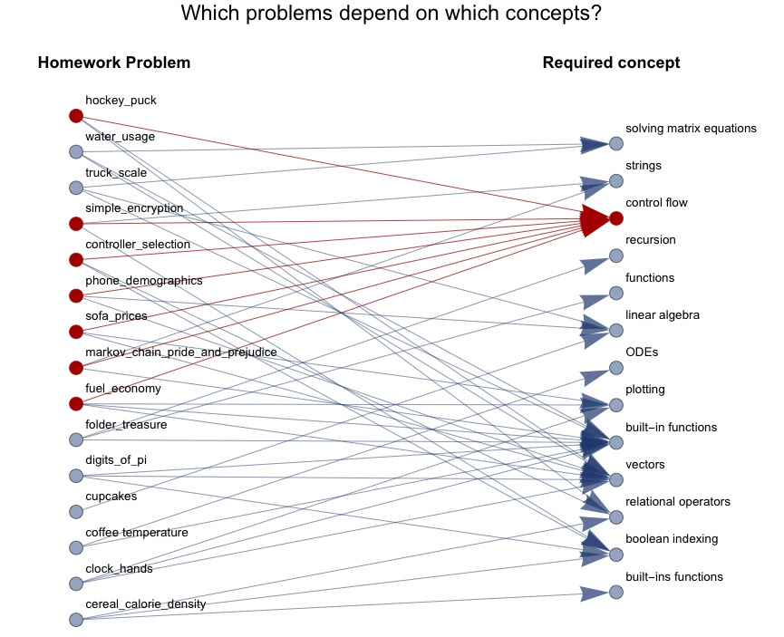A dependency graph of homework problems. For example, the red homework problems (left) all require the concept of “control flow” (right), so one needs to teach control flow before assigning those problems.
This was a lesson in the dangers of over-preparation. It became evident in the first week of the class that students new to programming felt lost and intimidated by the problems in Homework 1. The first homework was too ambitious — I was just so excited to show them all the cool things you can do with Matlab. But it required knowledge of several key elements of the language, and the students didn’t have time to absorb all the necessary pieces. In hindsight, the students needed a slower, gentler introduction to programming. My TAs reported that the students in their sections felt unprepared and were unhappy. I felt badly for my students. I met with Jeff and the TAs to consider contingencies. We recovered somewhat by delaying the homework deadline by four days. This opened up two more sets of office hours for them. Also, we re-purposed the first Hack Day for hands-on practice. This actually worked really well, because students could get instant feedback from their own computers. In light of this lesson, I ended up re-writing new, easier homework problems for subsequent assignments and discarding most of the ones I had prepared. The students registered their satisfaction via feedback cards a week later.
It’s worth noting that some students (presumably ones with prior programming experience) indicated via feedback cards that they enjoyed the harder homework problems. Those students were in the minority, and not our target audience. Perhaps I should have offered some harder problems as extra credit, but this would need to be done tactfully so as not to favor the advanced students unfairly.
Ultimately, the main lesson I learned from “the Homework 1 debacle” ties back to the theme of empathy: an instructor needs to be able to empathize with the student. I had forgotten that many of my students had never programmed before, and many were used to the kinds of problems taught in high-school, where they are given a formula and must plug in some numbers. It is scary to start a college career, and many students were worrying whether they could succeed as engineers — or even succeed at college at all. The students needed a gentler transition, which we were able to provide in subsequent weeks of the course.
GauchoCast Homework solutions¶
In many courses, homework solutions are posted as PDFs to the course website (typically hosted on GauchoSpace). For ENGR 3, the homework solutions consist of computer code, which could be posted in the same way. However, posting solutions in code format is problematic for two reasons: First, computer code is hard to read — even if it contains code comments — so students are less likely to study it. Moreover, the code doesn’t contain the results of running the code, so students can’t easily see the correct answer unless they run the code themselves. Second, PDFs and computer code files are easily uploaded to homework-solution-sharing websites like coursehero.com. These websites pay students to upload their courses’ homework and exam solutions, and other students pay coursehero.com for access to these materials. To prevent future ENGR 3 students from buying homework solutions, we wanted to disseminate homework solutions in a format that would be difficult for students to upload to coursehero.com.
We provided homework solutions in a new way: I recorded screencasts of the homework solutions using the Panopto screen recorder, and hosted them using UCSB’s GauchoCast video-hosting service. Each 3-10 minute video solved one homework problem. In each video, I show the code, explain it, and run it. Students view the videos in their web browser. This is what they see:
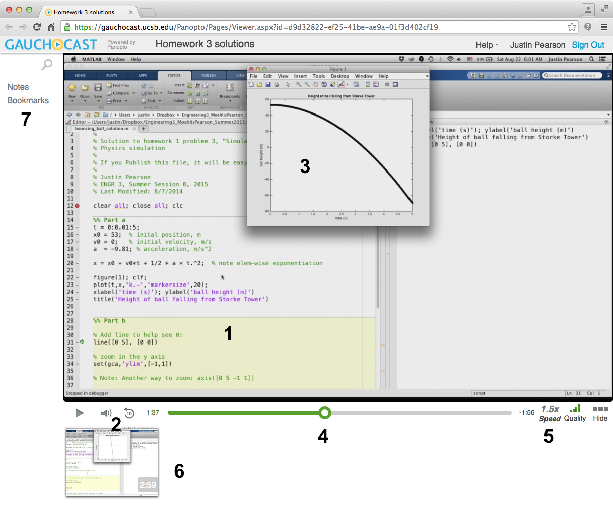The Panopto video player plug-in has many nice features (as indicated on the figure):
- students can see the code on my screen
- students hear me explain the code, which is easier than scrutinizing it themselves
- they see the results of me running the code step-by-step, e.g., this graph
- they can skip around in the video, rewind it, etc.
- they can play the video faster or slower than real-time, to match their individual learning speed
- thumbnail video frames help outline the video
- students can bookmark parts of the video and can leave comments at certain times
Moreover, the video files are streamed from UCSB’s servers and are difficult to download and too large to distribute on coursehero.com or other file-sharing sites.
We hoped that these videos would make the homework solutions more accessible for students, as well as limit their dissemination to future students of ENGR 3.
Based on GauchoCast metadata, 12% of the class watched the videos, 6% watched a portion of the videos, and 82% didn’t watch the videos:
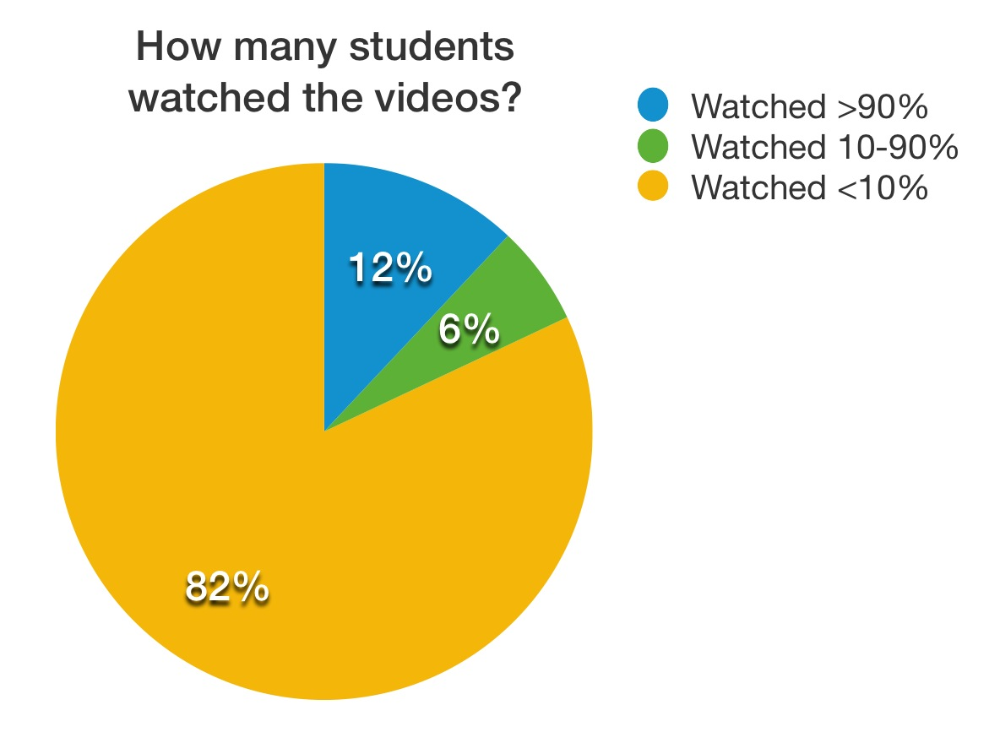{kind=link}
See Appendix 8 for a more in-depth analysis.
In light of this data, I would not post homework solution videos in the future. They are fairly easy to record, but it seems that the vast majority of students don’t utilize them. The benefit of being hard to copy could be achieved in other ways, e.g., password-protected PDFs. Furthermore, I note that the two lowest-performing students were among the most avid viewers. This may have been last-minute cramming, or might be a more dangerous indication that the videos lull viewers into a false sense of knowledge. In hindsight, I should have asked the students what they thought. This is an opportunity for me to grow as an educator: Instead of poring over the viewership data like a good engineer, it would be more characteristic of an empathetic instructor to poll my students directly about the videos’ usefulness.
Feedback cards¶
Feedback cards were immensely useful in tuning the course to suit the students’ needs. During my 3 weeks of lecturing, I gathered in-class feedback twice:
- Aug 12: at the beginning of the second week, after the first homework was due.
- Aug 19: at the end of the third week, the day before the midterm exam.
Here are the questions I asked:
- Are you in the Freshman Summer Start Program?
- Going into what year?
- Have you programmed before?
- Speed of lecture: want faster, slower, or OK?
- In-class exercises: want more, fewer, or OK?
- What’s going right with the class?
- What would you improve with the class?
In the first set of feedback cards, the students felt that the class was going at a good pace, but the vast majority of students felt that Homework 1 was too hard and the lecture didn’t prepare them for it. Their open-ended feedback is represented in this word cloud, where the size of the phrase indicates how many students voiced it:
| Aug 12: What’s going well? |
| 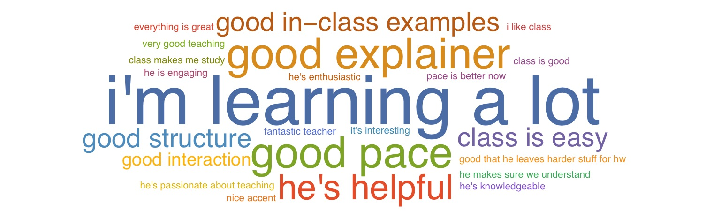 |
| Aug 12: What needs improvement? |
| 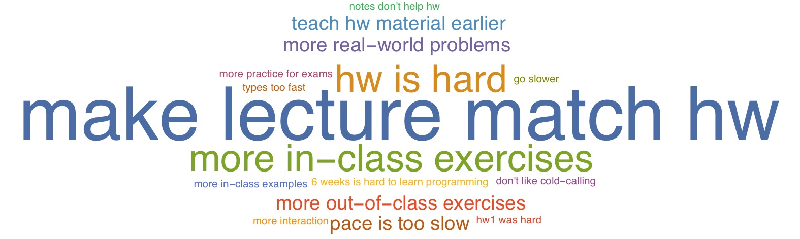 |
We responded to this by making subsequent homeworks easier and doing more in-class exercises of the material in class. Each exercise consisted of the students working independently for 3-5 minutes on a short programming problem, then discussing it. Moreover, I reworked the Hack Days to incorporate in-class exercises that were vaguely related to the homework, instead of using them to explore harder extensions to the material.
The students appreciated these changes. The second set of feedback cards indicated that they were satisfied with how the lecture matched the homework, but they wanted even more in-class examples and exercises:
| Aug 19: What’s going well? |
| 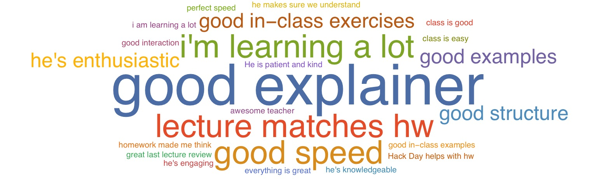 |
| Aug 19: What needs improvement? |
| 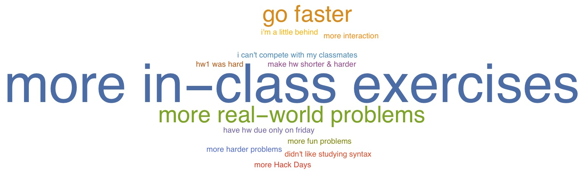 |
Here is a more quantitative comparison of their desire for more in-class exercises:
| Aug 12: Want more/fewer in-class exercises? | Aug 19: Want more/fewer in-class exercises? |
|---|---|
 |
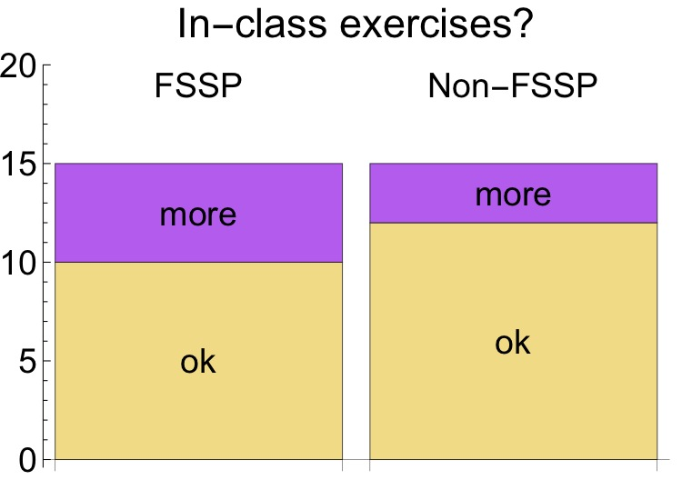 |
I was pleased that we were able to satisfy several of the students, and pleasantly surprised that the students wanted even more exercises. I had expected that, since the in-class exercises require effort on the students’ part, they would prefer to just have me lecture. The optimistic interpretation is that the students wanted the opportunity to practice the material in order to learn it better. The pessimistic interpretation is that the students wanted to “run the clock” with easy in-class exercises instead of learning new material for which they would be responsible. I personally believe that most students aligned with the optimistic view. My sense is that students like it when they can practice problems that are similar to the exams, and this was their main impetus for wanting more examples and exercises.
The feedback cards reassured me that I was going at an appropriate speed: In both sets of feedback cards, the students were reasonably happy with the pace. About the same number of students wanted me to go faster as the number that wanted me to go slower:
| Aug 12: Speed of the lecture OK? | Aug 19: Speed of the lecture OK? |
|---|---|
| 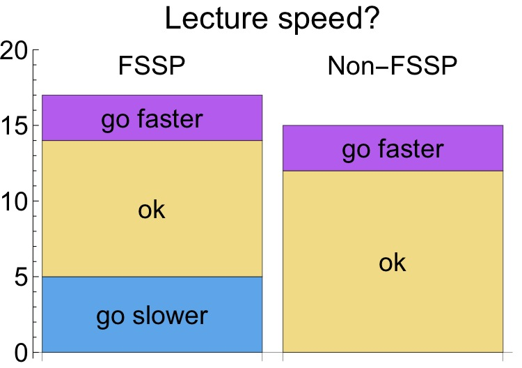 | 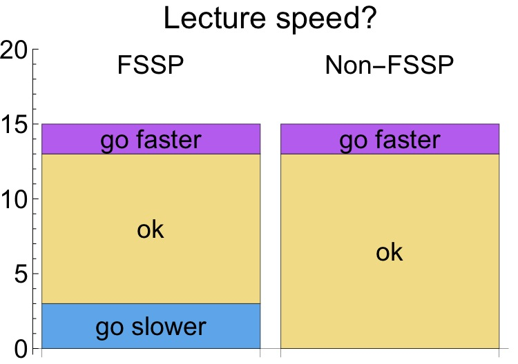 |
Feedback cards have the additional benefit of giving students a voice and helping them feel validated. I made a point to tell the students the main themes present in their feedback, to reassure them that I read them and that I cared. I empathized with their struggle.
ESCI Teaching Evaluations¶
My teaching evaluations are summarized in Appendix 5. I observe:
What worked:
- Students felt I was prepared, enthusiastic, helpful, and clear.
What needs improvement:
- Adapting to students’ abilities. A third of my students felt that I was only “good” at adapting my teaching to varying student abilities. (65% rated me “superior”.) This may be due to the variation in student abilities: It is difficult to teach at every student’s optimal level. Still, I could improve this by possibly asking for more feedback and posing more in-class questions to assess whether the students are following along.
- Fairness of assignments. 26% of my students felt our grading procedures were only “good”, while 10% felt they were “average”. (61% rated the fairness “superior”, and one student rated it “poor”.) I suspect these relatively low scores derive from the automatically-graded GauchoSpace quizzes. The GauchoSpace quizzes expect answers to have a very specific format, so it is difficult to pose programming questions. For example, Matlab doesn’t care about extra spaces in your program, but GauchoSpace quizzes do. We tried to combat this by placing a formatting guide at the top of each quiz that would help them conform to GauchoSpace’s expectations. But we still had to re-grade several quiz questions that had wrongly penalized students. In the future, I would consider using GauchoSpace quizzes only when a question has a specific numeric answer.
- Class notes not helpful. 35% of my students felt that the course notes were only “good”, and 6% felt they were “average”. (The remaining 59% thought they were “superior”.) I thought the students would like how I formatted the course notes: nicely-formatted Matlab code with explanations. I interspersed little exercises in my notes and left the answers blank for the students to fill in. It’s possible that students found this bothersome. In the future, I would like to figure out a way to assess whether the notes are useful to the students, and how they are using them. I expect that most students used them only as reference material, not as a lesson to study. Perhaps they needed guidance in how they should interact with the lecture notes.
I was pleased with my students’ open-ended reviews:
- Great passion & dedication for work.
- This course, albeit fast, was able to pack a lot of material into not that much time. Justin was extremely helpful in class and outside of class, and his lectures improved after he asked for class feedback. Overall, he is very approachable and an amazing & clear instructor.
- First half of class was really hard to grasp at first.
- Absolutely amazing professor. Should 100% be a full time professor here. Extremely passionate and open to help students.
- Good speaking voice, clear and precise. Notes in class also very thorough, but the ones posted online are not as good.
- I found Professor Justin Pearson to be a fantastic instructor while taking this course. He was able to clearly and effectively teach the course at a challenging yet manageable pace.
- Justin and Jeff are awesome teachers who really get me enthusiastic about programming. The first hw was very hard but also very rewarding!
Conclusion¶
Teaching a class took an incredible amount of work and was immensely gratifying. Guiding students through a potentially frustrating subject was electrifying, and I loved sharing my enthusiasm with them. Along the way, I learned several important lessons:
- Assigning an introductory survey helped me learn my students’ backgrounds and tune the course appropriately.
- After an initial rough start with Homework 1, I learned to assign homework of appropriate difficulty.
- I collected student feedback often and adjusted my course in response, for example by incorporating more in-class exercises.
- GauchoCast video homework solutions weren’t as helpful to the students as I had hoped, and I should have polled the students to determine that earlier.
- To maximize student interest, learning activities should prepare students for doing well on homeworks and exams (or whatever they are graded on). For example, I learned to use Hack Days to emphasize core concepts instead of exploring harder applications.
I feel very lucky to have had the opportunity to teach a university-level course, and I truly look forward to teaching subsequent courses at some point.